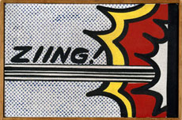

Roy Lichtenstein
 ZIING! (1962)
Crying Girl, 1963
[Detail]
Magnifying Glass, 1963
Haystack Nr. 3, 1969
Sigmar Polke
Portrait of Lee Harvey Oswald, 1963
Tisch, 1963 [Detail]
Herr Kluncker, 1964 [Detail]
Ries, 1964 [Detail]
Ohne Titel, 1965 [Detail]
Berliner (Bächerblume), 1965 [Detail]
Alain Jacquet
Portrait de Mario, 1964
Le Déjeuner sur l'Herbe, 1964
Portrait d'Homme, 1964
Hommes à la DS, 1965
Reference: David Clayton Phillips: Art for Industry's Sake: Halftone Technology, Mass Photography and the Social Transformation of American Print Culture, 1880-1920. Ph.D. Dissertation, Yale University, 1996.
David Clayton Phillips: Art for Industry's Sake: Halftone Technology, Mass Photography and the Social Transformation of American Print Culture, 1880-1920. Ph.D. Dissertation, Yale University, 1996.
Directly related work: ASCII Art (Peterson, Knowlton, Demiaux, Cosic) Pixel Grids (Harmon, Winiarski, Close)
ASCII Art (Peterson, Knowlton, Demiaux, Cosic) Pixel Grids (Harmon, Winiarski, Close)